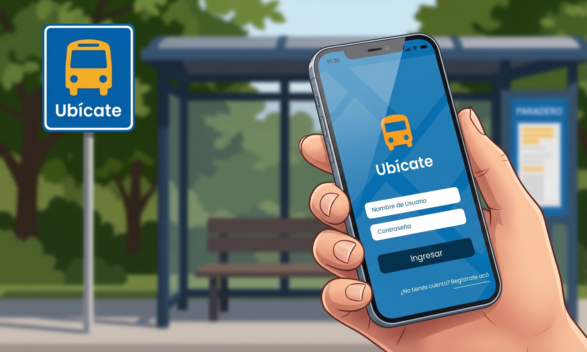
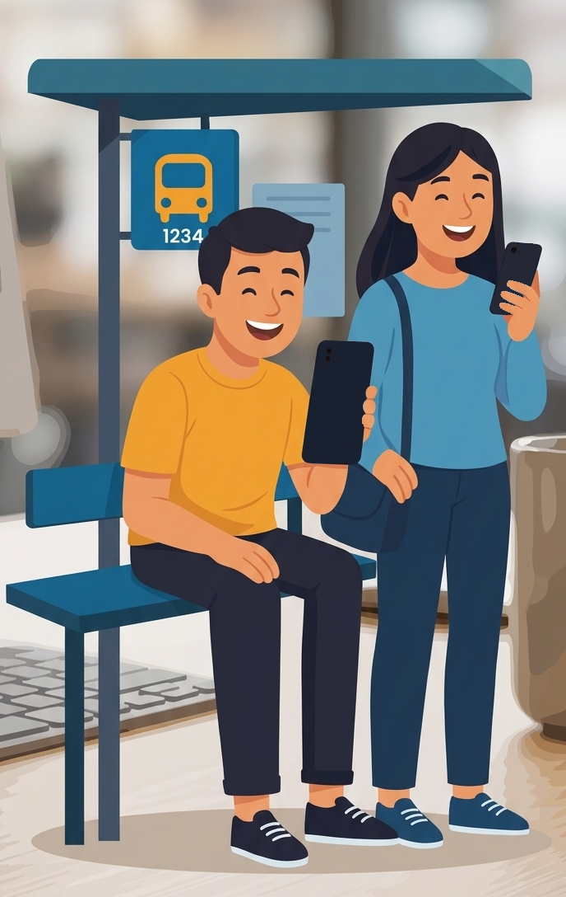
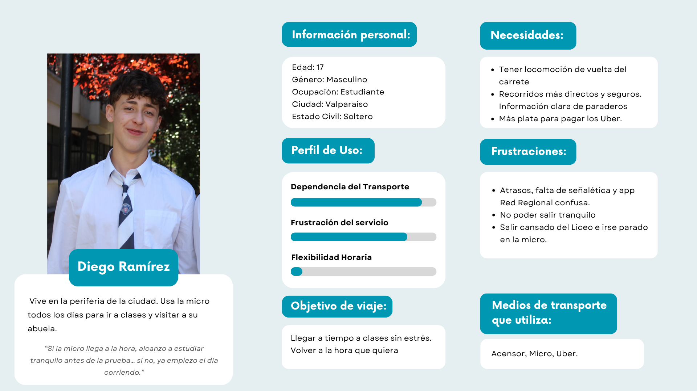
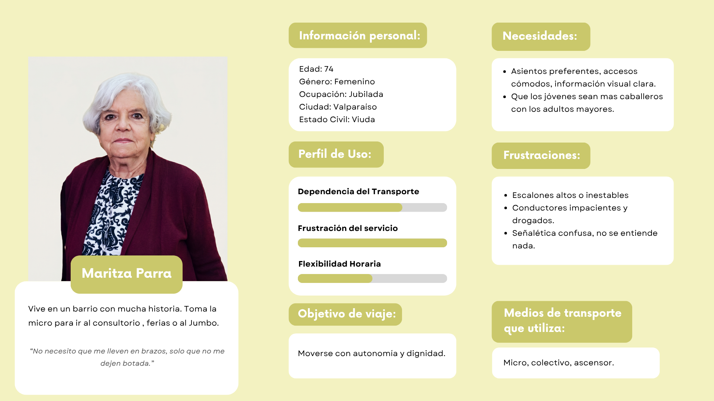
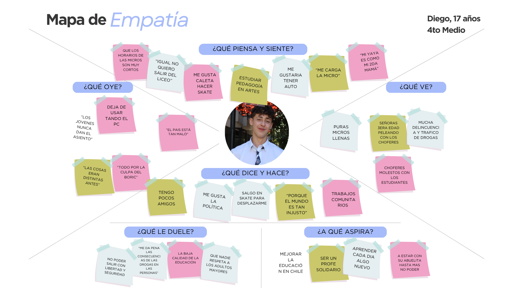
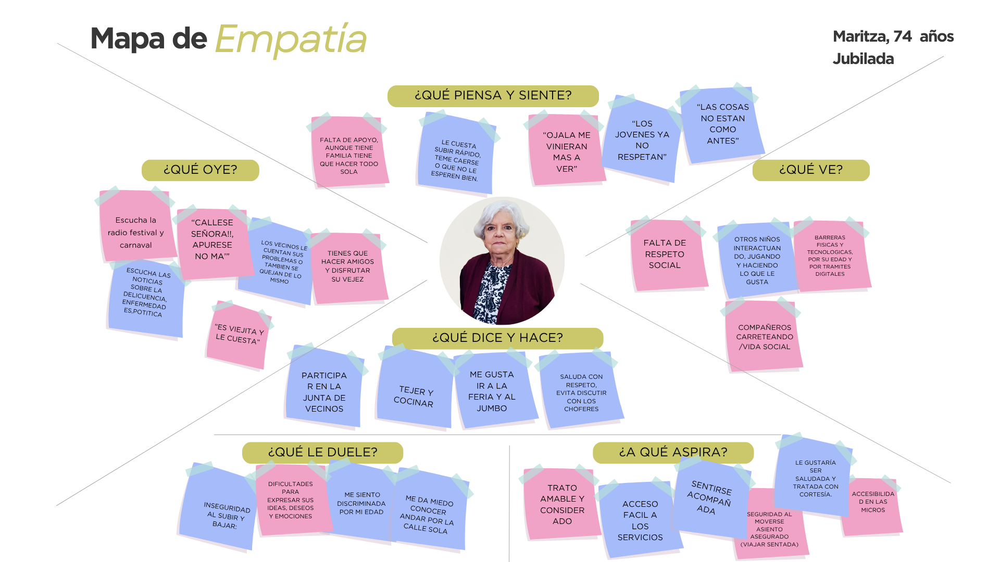
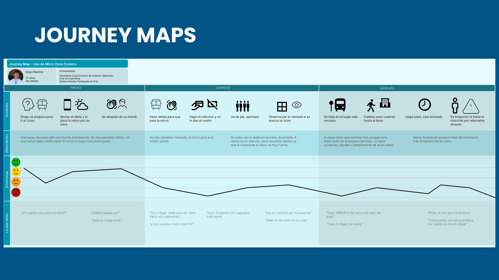
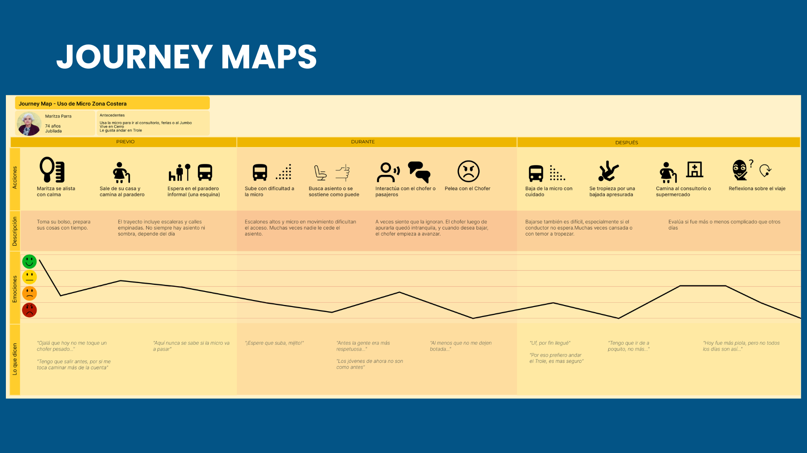
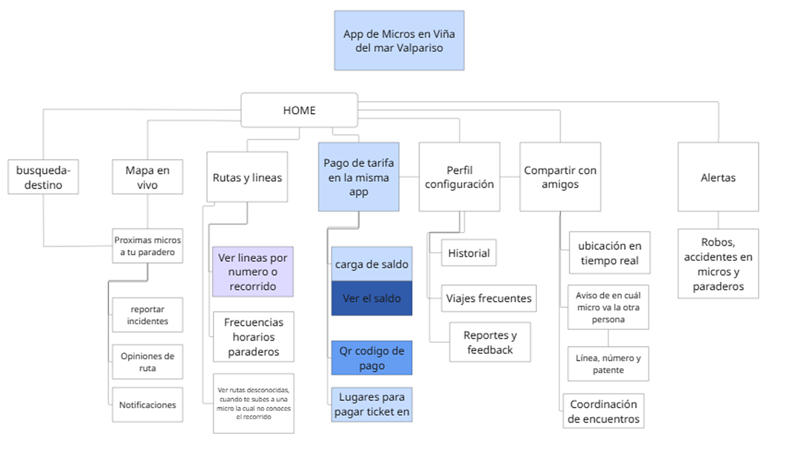

Dignificando el transporte público en la V Región
El sistema de transporte público en la V Región (Valparaíso – Concón) atraviesa una crisis de desinformación y desconfianza, con licitaciones vencidas y una alta dependencia del pago en efectivo. Esta incertidumbre genera ansiedad y exclusión en miles de usuarios que dependen de las micros para su vida diaria.
Ubícate nace como una respuesta desde el diseño de interacción para transformar esta «odisea» en una experiencia digna. A través de una investigación profunda en terreno, desarrollamos una solución mobile que centraliza la información en tiempo real y digitaliza el pago, priorizando la accesibilidad y la autonomía de estudiantes, trabajadores y adultos mayores.

No nos quedamos en el escritorio; fuimos al terreno. Mediante metodologías AEIOU, entrevistas y encuestas, identificamos que el problema no es solo la falta de buses, sino la ansiedad que genera la incertidumbre.
Inseguridad en los paraderos, dependencia del efectivo y falta de información para personas con movilidad reducida.
Analizamos sistemas globales (RATP, GVB) y locales (EFE, Red). Concluimos que, aunque la infraestructura sea robusta, la experiencia digital suele olvidar el factor humano.

Identificamos perfiles críticos que representan la diversidad de la V Región: desde el estudiante o trabajador que lucha contra la impuntualidad, hasta el adulto mayor que busca autonomía en un entorno geográfico complejo. Estos perfiles nos permitieron diseñar no para «un usuario genérico», sino para necesidades específicas de seguridad y claridad.
{{ quoteText }}




Los journey maps dejaron ver dónde cae la emoción: la espera sin información, el pago en efectivo y el momento de bajar. Esos tres valles definieron las funciones prioritarias de la app.


La arquitectura de Ubícate organiza la complejidad del transporte público en una estructura lineal y eficiente. A través de cinco nodos clave, la app no solo guía al usuario de un punto A a un punto B, sino que integra la gestión financiera del viaje y una capa de seguridad comunitaria, convirtiendo la navegación urbana en una experiencia conectada y segura.
Rutas y líneas de transporte (micro, metro, trolebús) para llegar al destino.
Ver líneas de micros y recorridos, con frecuencias y horarios.
Generador de código en la misma app y recarga de saldo, sin depender del efectivo.
Ubicación en tiempo real, sincronizar contactos y ver en qué micro va la otra persona: línea, número y patente.
Seguridad e información ante robos, tráfico y accidentes en micros y paraderos.
